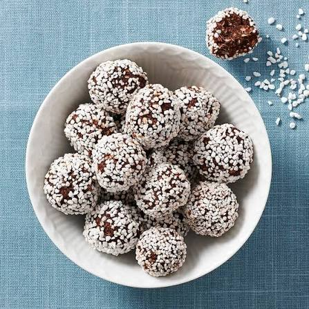

Chokladbollar - godaste receptet
Hem
Världens godaste chokladbollar får en extra fin smak av att smöret först får puttra lite på spisen.
Låt smeten stelna i kylskåpet en stund innan du formar chokladbollarna.
Rulla i kokos eller pärlsocker, det som du gillar mest. Så bakar du chokladbollar, även kallat kokosbollar!

Beskrivning
Ett grundrecept på chokladbollar.
Ingredienser
15 - 20 stycken
- 100 g smör
- 1 dl strösocker
- 1 msk vaniljsocker
- 3 msk kakao
- 3 dl havregryn
- 3 msk kallt starkt kaffe
Att rulla chokladbollarna i
- Pärlsocker, kokos eller strössel
Gör så här
- Smält smöret och låt puttra 1 minut.
- Blanda socker, vaniljsocker, kakao, havregryn, kaffe och smör med en elvisp.
- Ställ in i kylskåp så att smeten stelnar lite, ca 40 minuter.
- Forma bollar. Rulla i pärlsocker, kokos eller strössel.